AA
Tae Kim
3/25/2019
Last updated: 2019-04-07
Checks: 6 0
Knit directory: diffNet/
This reproducible R Markdown analysis was created with workflowr (version 1.2.0). The Report tab describes the reproducibility checks that were applied when the results were created. The Past versions tab lists the development history.
Great! Since the R Markdown file has been committed to the Git repository, you know the exact version of the code that produced these results.
Great job! The global environment was empty. Objects defined in the global environment can affect the analysis in your R Markdown file in unknown ways. For reproduciblity it’s best to always run the code in an empty environment.
The command set.seed(20190331) was run prior to running the code in the R Markdown file. Setting a seed ensures that any results that rely on randomness, e.g. subsampling or permutations, are reproducible.
Great job! Recording the operating system, R version, and package versions is critical for reproducibility.
Nice! There were no cached chunks for this analysis, so you can be confident that you successfully produced the results during this run.
Great! You are using Git for version control. Tracking code development and connecting the code version to the results is critical for reproducibility. The version displayed above was the version of the Git repository at the time these results were generated.
Note that you need to be careful to ensure that all relevant files for the analysis have been committed to Git prior to generating the results (you can use wflow_publish or wflow_git_commit). workflowr only checks the R Markdown file, but you know if there are other scripts or data files that it depends on. Below is the status of the Git repository when the results were generated:
Ignored files:
Ignored: .DS_Store
Ignored: .Rhistory
Ignored: .Rproj.user/
Ignored: R/.DS_Store
Ignored: R/.Rhistory
Ignored: analysis/.DS_Store
Ignored: analysis/.Rhistory
Ignored: docs/.DS_Store
Ignored: docs/figure/.DS_Store
Untracked files:
Untracked: .Rprofile
Untracked: .gitignore
Untracked: R/not_build/
Untracked: analysis/AA_EA_cache/
Untracked: analysis/AA_skin_not_sun_exposed.Rmd
Untracked: analysis/AA_skin_not_sun_exposed.pdf
Untracked: analysis/HLA-DQA1.Rmd
Untracked: analysis/HLA-DQA1.pdf
Untracked: analysis/HLAgenes.Rmd
Untracked: analysis/HLAgenes.pdf
Untracked: analysis/HMP.Rmd
Untracked: analysis/HMP.pdf
Untracked: analysis/KgreaterthanN.Rmd
Untracked: analysis/KgreaterthanN.pdf
Untracked: analysis/TFs.Rmd
Untracked: analysis/TFs.pdf
Untracked: analysis/activation_permutation_test_result.Rdata
Untracked: analysis/autoimmune_pathway.Rmd
Untracked: analysis/binding_permutation_test_result.Rdata
Untracked: analysis/catalysis_permutation_test_result.Rdata
Untracked: analysis/correction.R
Untracked: analysis/degree_simulation.R
Untracked: analysis/export_genenames.R
Untracked: analysis/expression_permutation_test_result.Rdata
Untracked: analysis/inhibition_permutation_test_result.Rdata
Untracked: analysis/largeK.Rmd
Untracked: analysis/largeK.pdf
Untracked: analysis/make_reference_hgnc.R
Untracked: analysis/normality_breaks.R
Untracked: analysis/permutation_test.Rmd
Untracked: analysis/permutation_test.pdf
Untracked: analysis/ptmod_permutation_test_result.Rdata
Untracked: analysis/reaction_permutation_test_result.Rdata
Untracked: analysis/remove_covariates.Rmd
Untracked: analysis/score_test_simulation.R
Untracked: analysis/simulation1.Rmd
Untracked: analysis/simulation2.Rmd
Untracked: analysis/skin_AA.Rmd
Untracked: analysis/skin_AA.pdf
Untracked: analysis/skin_not__sun_exposed.pdf
Untracked: analysis/skin_not__sun_exposed_files/
Untracked: analysis/skin_not_sun_exposed.Rmd
Untracked: analysis/skin_not_sun_exposed.pdf
Untracked: analysis/smallk_known_sigma.Rmd
Untracked: analysis/smallk_known_sigma.pdf
Untracked: analysis/smallk_unknown_sigma.Rmd
Untracked: analysis/smallk_unknown_sigma.pdf
Untracked: analysis/type1error.Rmd
Untracked: code/
Untracked: data/
Untracked: docs/figure/simulation1.Rmd/
Untracked: docs/figure/simulation2.Rmd/
Untracked: old_analysis/
Untracked: output/
Untracked: src/networkAnc.so
Note that any generated files, e.g. HTML, png, CSS, etc., are not included in this status report because it is ok for generated content to have uncommitted changes.
These are the previous versions of the R Markdown and HTML files. If you’ve configured a remote Git repository (see ?wflow_git_remote), click on the hyperlinks in the table below to view them.
| File | Version | Author | Date | Message |
|---|---|---|---|---|
| html | 432088c | tk382 | 2019-04-07 | Build site. |
| html | dc21566 | tk382 | 2019-04-03 | Build site. |
| html | 368bd3e | tk382 | 2019-04-02 | Build site. |
| Rmd | 00c0059 | tk382 | 2019-04-02 | wflow_publish(c(“analysis/AA.Rmd”, “analysis/AA_EA.Rmd”)) |
| html | 4053f50 | tk382 | 2019-04-01 | Build site. |
| Rmd | 1f68ec1 | tk382 | 2019-04-01 | wflow_publish(“analysis/AA.Rmd”) |
| html | b8ce5bb | tk382 | 2019-04-01 | Build site. |
| Rmd | 058b38f | tk382 | 2019-04-01 | wflow_publish(c(“analysis/index.Rmd”, “analysis/license.Rmd”, “analysis/about.Rmd”, |
1. Data pre-processing
We use the RNA-seq expression level data provided by GTEx, which has been already pre-processed. We choose to study not-sun-exposed suprapubic skin tissue as a pilot study because we expect to see some ancestry effect on the expression level on the skin tissue. Genes were selected based on expression threshold of \(>0.1\) RPKM in at least 10 individuals and \(\geq\) reads in at least 10 individuals. Then the expression values were quantile normalized to the average empirical distribution observed across samples. That means, each gene has the same distribution across the individuals. Then they were inverse quantile normalized to fit standard normal distribution.
(a) Load and clean the data
load("data/skin_not_sun_exposed_suprapubic.Rdata")
exp = skin; rm(skin)
colnames(exp) = gsub("[.]", "-", colnames(exp))
ind = which(colSums(!is.na(exp)) == 0)
exp = exp[,-ind]
ind= which(rowSums(!is.na(exp)) == 0)
exp = exp[-ind, ]
invisible(gc())
finalA = read.table("data/finalA.txt", header=TRUE)
AAs = intersect(colnames(exp), finalA$subject)
EAs = colnames(exp)[! colnames(exp) %in% finalA$subject]
newA= data.frame(subject = AAs, A = finalA[match(AAs, finalA$subject), 2])
Y = exp[, c(AAs, EAs)]
rm(exp); invisible(gc())
EA_A = data.frame(subject = EAs, A = 0)
X = rbind(newA, EA_A)
rm(newA, EA_A, AAs, EAs, ind, finalA)
rownames(Y) = sapply(strsplit(rownames(Y), '[.]'), function(x) x[1])
Y = t(Y)
ind = which(X$A > 0)
Y = Y[ind,]
X = X[ind, ]
orig = Y(b) scale the data and regress out the mean
We code African Americans as 0 and European Americans as 1 to compare group by group coexpression difference. We also consider correlation matrix, so we scale the gene expression level matrix to have variance 1. Then we regress out ancestry from the gene expression level to remove the mean effect.
orig_A = X$A
X$A = scale(X$A) * sqrt(length(X$A)) / sqrt(length(X$A)-1)
Y = resid(lm(Y~X$A))
Y = scale(Y) * sqrt(length(X$A)) / sqrt(length(X$A)-1)ref_chisq = qchisq(seq(0,1, length=ncol(Y)-1), 1)B = 5000(c) match ENSEMBL ID and hgnc symbols
https://www.genenames.org/download/custom/
hgnc_names = hgnc[match(colnames(Y), hgnc$`Ensembl gene ID`), "Approved symbol"]
ref = data.frame(ensembl_gene_id = colnames(Y), hgnc_symbol = hgnc_names)
ref$ensembl_gene_id = as.character(ref$ensembl_gene_id)
ref$hgnc_symbol = as.character(ref$hgnc_symbol)2. Gene selection
In order to avoid extensive multiple testing, we use prior information in biology.
(a) KEGG pathway
We believe the disease pathways may reflect the gene-gene correlation structure or gene modules, so we choose three pathways that are related to either skin tissue or immunity - melonoma, asthma, and autoimmune disease.
For each pathway, we take a group of \(K\) genes and for each \(k\) in \(1, \cdots, K\), we compute \(d_k\) and compare it to the empirical distribution by permuting the ancestry. Then we show qqplot of the p values against the uniform distribution after transformation \(-log_{10}(p)\).
get_result_kegg = function(hsacode, B){
out = keggGet(hsacode)
out = out[[1]]
genes = sapply(strsplit(out$GENE, ";"), function(x) x[1])
genes = genes[seq(2,length(genes),by=2)]
results = ref[match(genes, ref$hgnc_symbol), ]
genes = colnames(Y)[which(colnames(Y) %in% results$ensembl_gene_id)]
results = results[match(genes, results$ensembl_gene_id), ]
R = Y[,genes]
d = rep(0, ncol(R))
p = rep(0, ncol(R))
for (i in 1:ncol(R)){
d[i] = get_degree_c(X$A, R[,i], R[,-i])
storeW = store_W_c(R[,i], R[,-i])
out = rowSums(bootstrap_c(X$A, B, storeW))
p[i] = sum(out > d[i]) / B
}
return(list(p = p, d = d, genes = results))
}
out = get_result_kegg("hsa05218", B) #melanoma disease
par(mfrow = c(1,2))
qqplot(-log(seq(0,1,length.out = length(out$p))), -log(out$p),
xlab = '-log uniform',
ylab = '-log p',
main = "melanoma")
abline(0,1,col = 'red')
df = data.frame(p = -log(out$p), genes = out$genes$hgnc_symbol, ind = 1:length(out$p))
plot(-log(out$p),
ylab = '-log p',
main = '-log(p) values',
xlim = c(0, length(out$p)+10))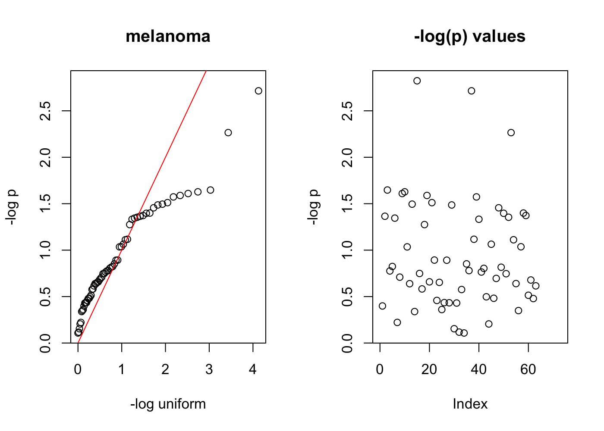
| Version | Author | Date |
|---|---|---|
| 432088c | tk382 | 2019-04-07 |
ind = which(df$p > 3)
if(length(ind)>0){
df = df[ind, ]
with(df, text(p ~ ind, labels = genes, pos = 4))
}
out = get_result_kegg("hsa05310", B) #asthma
par(mfrow = c(1,2))
qqplot(-log(seq(0,1,length.out = length(out$p))), -log(out$p),
xlab = '-log uniform',
ylab = '-log p',
main = "asthma")
abline(0,1,col = 'red')
df = data.frame(p = -log(out$p), genes = out$genes$hgnc_symbol, ind = 1:length(out$p))
plot(-log(out$p),
ylab = '-log p',
main = '-log(p) values',
xlim = c(0, length(out$p)+10))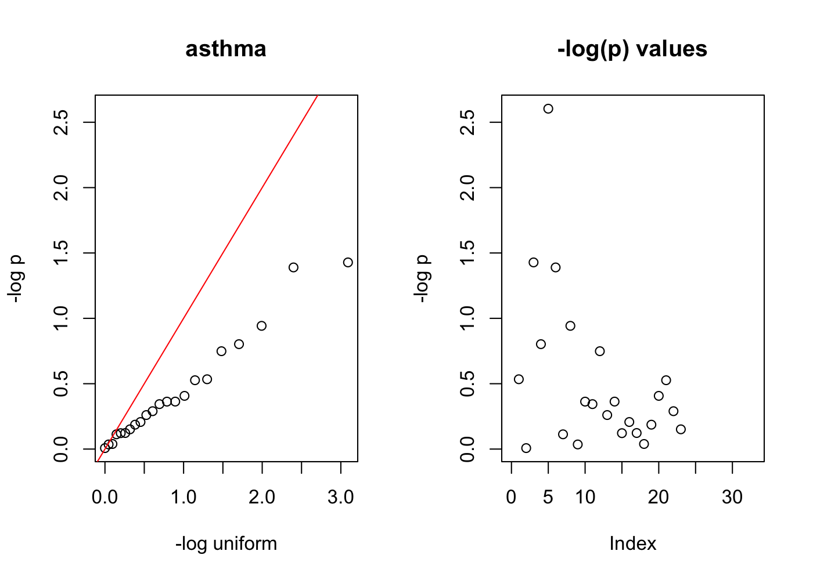
| Version | Author | Date |
|---|---|---|
| 432088c | tk382 | 2019-04-07 |
ind = which(df$p > 3)
if(length(ind)>0){
df = df[ind, ]
with(df, text(p ~ ind, labels = genes, pos = 4))
}
out = get_result_kegg("hsa05320", B) #autoimmune
par(mfrow = c(1,2))
qqplot(-log(seq(0,1,length.out = length(out$p))), -log(out$p),
xlab = '-log uniform',
ylab = '-log p',
main = "auto immune")
abline(0,1,col = 'red')
df = data.frame(p = -log(out$p), genes = out$genes$hgnc_symbol, ind = 1:length(out$p))
plot(-log(out$p),
ylab = '-log p',
main = '-log(p) values',
xlim = c(0, length(out$p)+10))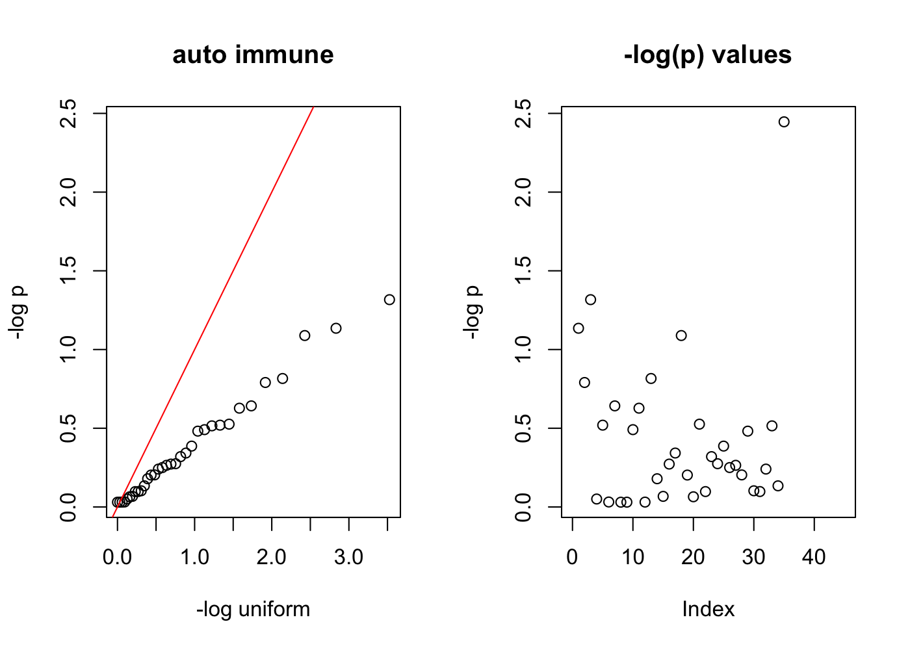
| Version | Author | Date |
|---|---|---|
| 432088c | tk382 | 2019-04-07 |
ind = which(df$p > 3)
if(length(ind)>0){
df = df[ind, ]
with(df, text(p ~ ind, labels = genes, pos = 4))
}(b) HLA genes
We know that HLA genes are connected to many other genes and play critical role in regulating the gene transcription. We obtain the list of HLA genes and compute \(d_1\) by adding up pair-wise test statistics across the entire genome.
hla_genes = c("HLA-A", "HLA-B", "HLA-C", "HLA-E",
"HLA-F", "HLA-G", "HLA-H", "HLA-J",
"HLA-K", "HLA-L", "HLA-N", "HLA-P",
"HLA-S", "HLA-T", "HLA-U", "HLA-V",
"HLA-W", "HLA-X", "HLA-Y", "HLA-Z",
"HLA-DRA", "HLA-DRB2", "HLA-DRB3",
"HLA-DRB4", "HLA-DRB5", "HLA-DRB6",
"HLA-DRB7", "HLA-DRB8", "HLA-DRB9",
"HLA-DQA1", "HLA-DQB1", "HLA-DQA2",
"HLA-DQB2", "HLA-DQB3", "HLA-DOA",
"HLA-DMA", "HLA-DMB", "HLA-DPA1", "HLA-DPB1",
"HLA-DPA2", "HLA-DPB2", "HLA-DPA3",
"HFE", "TAP1", "TAP2", "PSMB9", "PSMB8",
"MICA", "MICB", "MICC", "MICD", "MICE")
results = ref[match(hla_genes, ref$hgnc_symbol), ]
genes = colnames(Y)[which(colnames(Y) %in% results$ensembl_gene_id)]
results = results[match(genes, results$ensembl_gene_id), ]
scores = newscores = matrix(0, length(genes), ncol(Y)-1)
coef = cubic_coeff_c(X$A, qchisq(1-0.05/ncol(Y), 1), 2, 2)
for (i in 1:length(genes)){
ind = which(colnames(Y) == results$ensembl_gene_id[i])
W = store_W_c(Y[,ind], Y[, -ind])
scores[i,] = get_score_W_c(X$A, W)
for (j in 1:ncol(scores)){
roots = polyroot(c(-scores[i,j], coef))
newscores[i,j] = Re(roots)[abs(Im(roots)) < 1e-6]
}
}And the result is plotted below, where the red line is the expected mean. HLA-DQA1 stands out in its test statistic.
par(mfrow = c(1,2))
d = rowSums(newscores)
df = data.frame(d = d, genes = results$hgnc_symbol, xaxis = 1:length(d))
plot(d,
ylab = 'd',
main = 'HLA-genes',
xlim = c(0,45),
ylim = c(0, max(d) + 100))
abline(h=25190, col='red')
ind = which(d > 2*ncol(Y))
df = df[ind, ]
with(df, text(d ~ xaxis, labels = genes, pos = 4))
ref_chisq = qchisq(seq(0,1,length=length(newscores[1,])), 1)
ind = which(results$hgnc_symbol == "PSMB8")
qqplot(ref_chisq, newscores[ind,], main = 'PSMB8 scores', ylab='scores'); abline(0,1,col = 'red')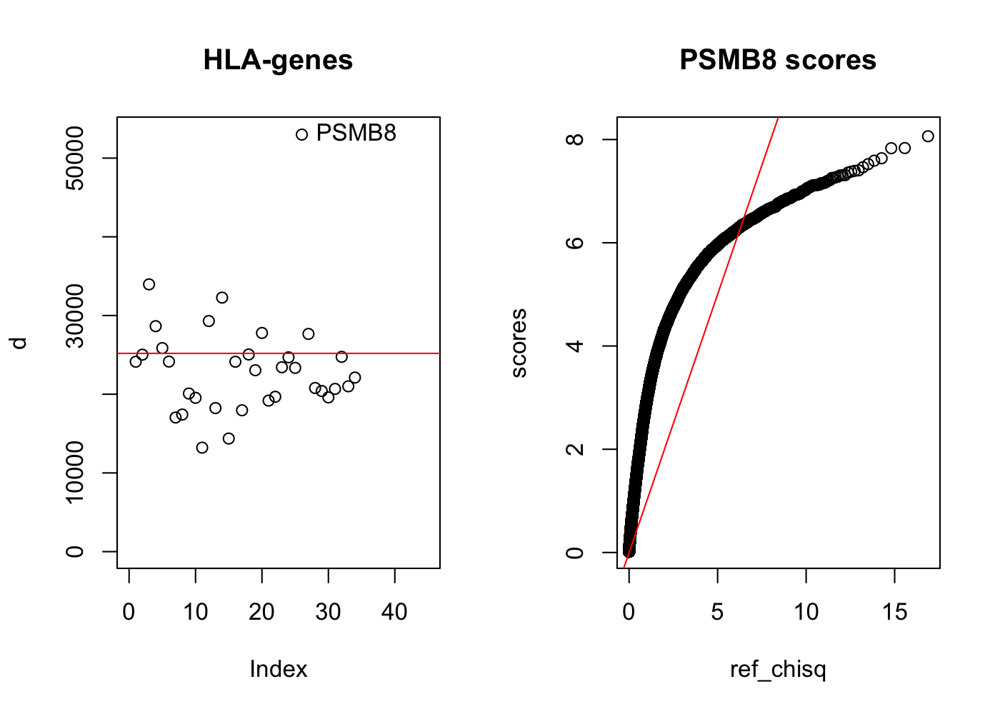
| Version | Author | Date |
|---|---|---|
| 432088c | tk382 | 2019-04-07 |
(c) Transcription Factors
(i) Read TF data
Since transcription factors usually regulate the transcription of multiple genes, we thought they were appropriate targets to study their variance in activity across different ancestry.
TF = fread("data/not_build/TFcheckpoint.txt", header=TRUE)
TF = setDF(TF)
TF = TF[TF$TFClass_human == "TFclass", ]
TF = TF[,1]
TF_results = ref[match(TF, ref$hgnc), ]
genes = colnames(Y)[which(colnames(Y) %in% TF_results$ensembl_gene_id)]
TF_results = TF_results[match(genes, TF_results$ensembl_gene_id), ](ii) test all the TFs
scores = matrix(0, length(genes), ncol(Y)-1)
for (i in 1:length(genes)){
ind = which(colnames(Y) == TF_results$ensembl_gene_id[i])
W = store_W_c(Y[,ind], Y[, -ind])
scores[i,] = get_score_W_c(X$A, W)
}
par(mfrow = c(1,2))
d = rowSums(scores)
df = data.frame(d = d, genes = TF_results$hgnc_symbol, xaxis = 1:length(d))
plot(d,
ylab = 'd',
main = 'Transcription Factors',
xlim = c(0, length(d)+100),
ylim = c(0, max(d) + 10000))
abline(h=25190, col='red')
ind = which(d > ncol(Y) + 200 * sqrt(2*ncol(Y)))
df = df[ind, ]
with(df, text(d ~ xaxis, labels = genes, pos = 3))
ref_chisq = qchisq(seq(0,1, length=ncol(Y)-1), 1)
for (i in 1:length(genes)){
if(TF_results$hgnc_symbol[i] %in% c("PTCH1")){
qqplot(ref_chisq, scores[i, ],
main = paste(TF_results$hgnc_symbol[i], 'unadjusted'),
cex = 0.5)
abline(0,1,col = 'red')
}
}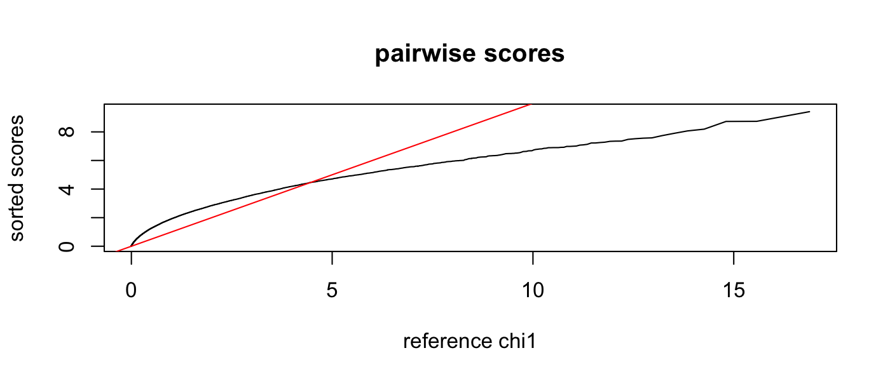
3. Investigating the top signals
(a) PSMB8
(i) Score test
We re-cap what we have observed in HLA-DQA1 for the score tests.
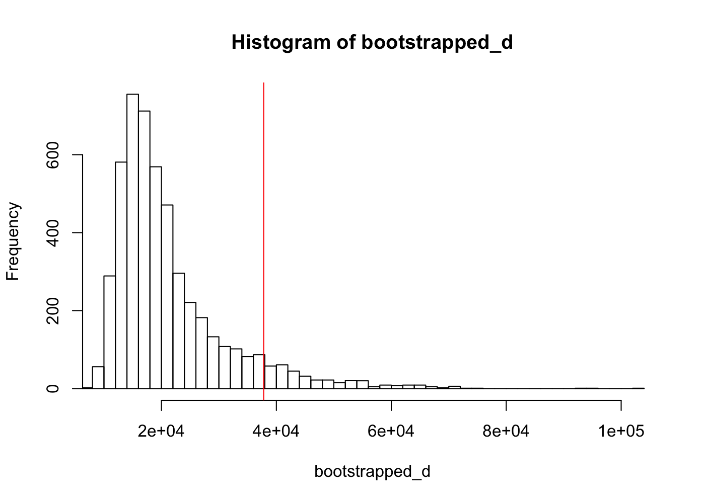
(ii) Permutation test
In order to verify if PSMB8 truly has a signal, we perform permutation test. The p-value is indeed very small.
W = store_W_c(Y[,psmb_ind], Y[, -psmb_ind])
psmb_scores = get_score_W_c(X$A, W)
psmb_d = get_degree_c(X$A, Y[,psmb_ind], Y[,-psmb_ind])
storeW = store_W_c(Y[,psmb_ind], Y[,-psmb_ind])
out = bootstrap_c(X$A, B, storeW)
bootstrapped_d = rowSums(out)
psmb_p = sum(bootstrapped_d > psmb_d) / B
hist(bootstrapped_d, 50, xlim = c(10000, max(max(bootstrapped_d), psmb_d))+20)
abline(v=psmb_d, col = 'red')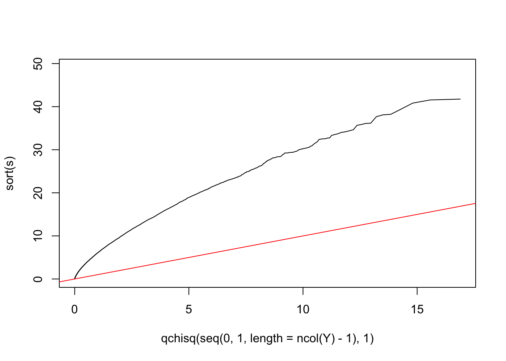
print(psmb_p)[1] 0.0722(b)PTCH1
(i) Score test
ptch_gene = "PTCH1"
results = ref[match(ptch_gene, ref$hgnc), ]
ptch_ind = which(colnames(Y) %in% results$ensembl_gene_id)
smallY = Y[,-ptch_ind]
s = news = rep(0, ncol(Y)-1)
for (i in 1:(ncol(Y)-1)){
s[i] = get_score_c(X$A, Y[,ptch_ind], smallY[,i])
}
plot(sort(s) ~ qchisq(seq(0,1,length=ncol(Y)-1), 1), type = 'l'); abline(0,1,col = 'red', main = 'adjusted')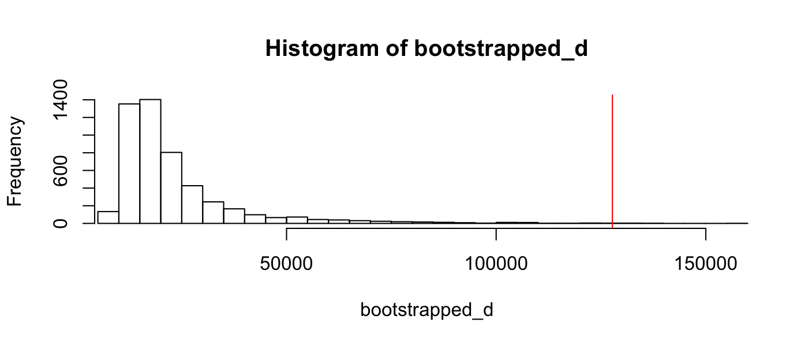
(ii) Permutation test
We conduct the permutation test to see if the signal is real.
ptch_ind = which(colnames(Y) %in% ref[ref$hgnc_symbol=="PTCH1", 1])
W = store_W_c(Y[,ptch_ind], Y[, -ptch_ind])
ptch_scores = get_score_W_c(X$A, W)
ptch_d = get_degree_c(X$A, Y[,ptch_ind], Y[,-ptch_ind])
storeW = store_W_c(Y[,ptch_ind], Y[,-ptch_ind])
out = bootstrap_c(X$A, B, storeW)
bootstrapped_d = rowSums(out)
ptch_p = sum(bootstrapped_d > ptch_d) / B
par(mfrow = c(1,1))
hist(bootstrapped_d, 50, xlim = c(10000, max(max(bootstrapped_d), ptch_d))+100)
abline(v=ptch_d, col = 'red')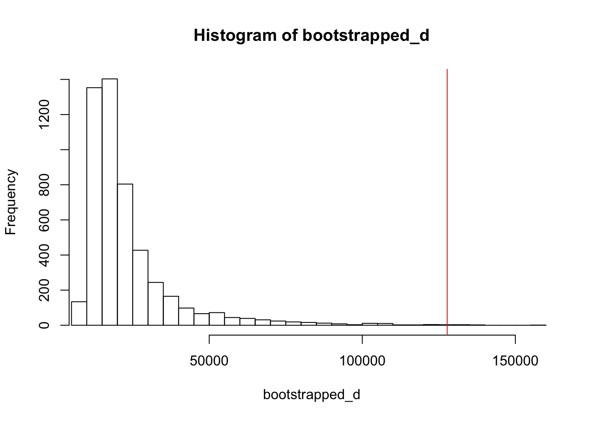
| Version | Author | Date |
|---|---|---|
| 432088c | tk382 | 2019-04-07 |
print(ptch_p)[1] 0.0014# par(mfrow = c(2,3))
# for (i in 1:12){
# qqplot(ref_chisq, out[i, ], cex = 0.5, type = 'l', ylab = 'permuted score')
# abline(0,1,col = 'red')
# }(iii) Original expression
We inspect the raw data to see any patterns between Afircan Americans and European Americans.
ptch_exp = as.matrix(orig[,ptch_ind])(iv) Genes with the highest scores for PTCH1
We make some diagnosis plot to observe what is driving the signal.
max_scores = sort(s, decreasing=TRUE, index.return=TRUE)
results = ref[match(colnames(Y[,-ptch_ind])[max_scores$ix[1:5]], ref$ensembl_gene_id), ]
results = results[match(results$ensembl_gene_id, colnames(Y[,-ptch_ind])[max_scores$ix[1:5]]), ]
top_genes = data.frame(gene_name = results$hgnc_symbol, score = max_scores$x[1:5],
ensembl = results$ensembl_gene_id)
print(top_genes) gene_name score ensembl
1 PRDM5 49.04952 ENSG00000138738
2 <NA> 41.75227 ENSG00000254406
3 RHOBTB1 41.55506 ENSG00000072422
4 ASPA 40.82563 ENSG00000108381
5 C1QTNF9B 39.34597 ENSG00000205863par(mfrow = c(1,2))
plot(orig[, ptch_ind] + orig[,-ptch_ind][, max_scores$ix[1]] ~
X$A,
main = 'African Americans',
xlab = 'Ancestry',
ylab = 'PTCH1 + PRDM5')
plot(orig[, ptch_ind] + orig[,-ptch_ind][, max_scores$ix[2]] ~
X$A,
main = 'African Americans',
xlab = 'Ancestry',
ylab = 'PTCH1 + C1QTNF9B')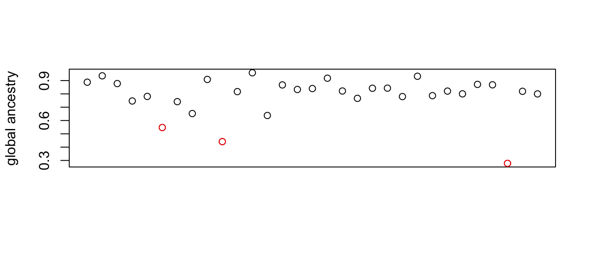
3. Remove samples with ancestry less than 0.5
plot(orig_A, ylab = 'global ancestry', xlab="", xaxt='n')
ind = which(orig_A <= 0.6)
points(ind, orig_A[ind], col = 'red')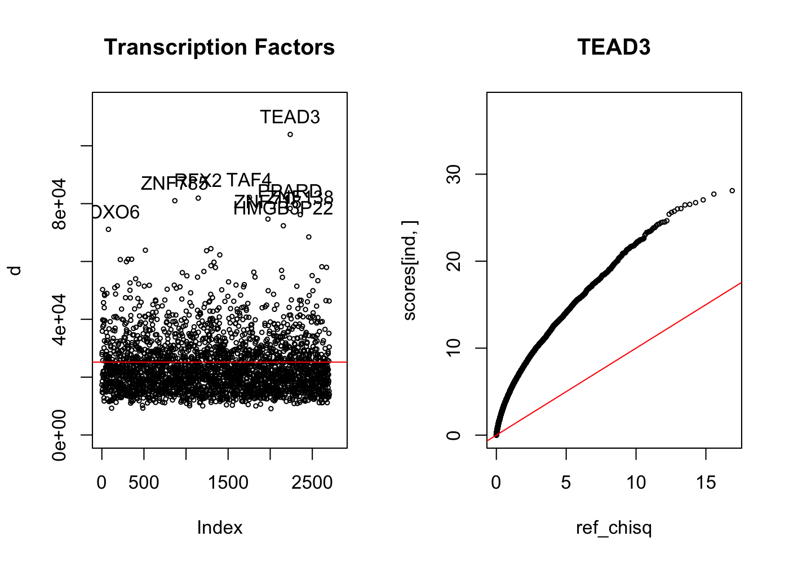
remove = which(orig_A <= 0.6)
newY = orig[-remove,]
newX = X[-remove,]
newX$A = scale(newX$A) * sqrt(length(newX$A)) / sqrt(length(newX$A)-1)
newY = resid(lm(newY~newX$A))
newY = scale(newY) * sqrt(length(newX$A)) / sqrt(length(newX$A)-1)(a) Re-run the transcription factors
scores = matrix(0, length(genes), ncol(newY)-1)
for (i in 1:length(genes)){
ind = which(colnames(newY) == TF_results$ensembl_gene_id[i])
W = store_W_c(newY[,ind], newY[, -ind])
scores[i,] = get_score_W_c(newX$A, W)
}
par(mfrow = c(1,2))
d = rowSums(scores)
df = data.frame(d = d, genes = TF_results$hgnc_symbol, xaxis = 1:length(d))
plot(d,
ylab = 'd',
main = 'Transcription Factors',
xlim = c(0, length(d)+100),
ylim = c(0, max(d) + 10000),
cex = 0.5)
abline(h=25190, col='red')
ind = which(d > ncol(newY) + 200 * sqrt(2*ncol(newY)))
if(length(ind)>0){
df = df[ind, ]
with(df, text(d ~ xaxis, labels = genes, pos = 3))
}
ref_chisq = qchisq(seq(0,1, length=ncol(newY)-1), 1)
ind = which.max(d)
qqplot(ref_chisq, scores[ind,],
main = TF_results$hgnc_symbol[ind],
cex = 0.5)
abline(0,1,col = 'red')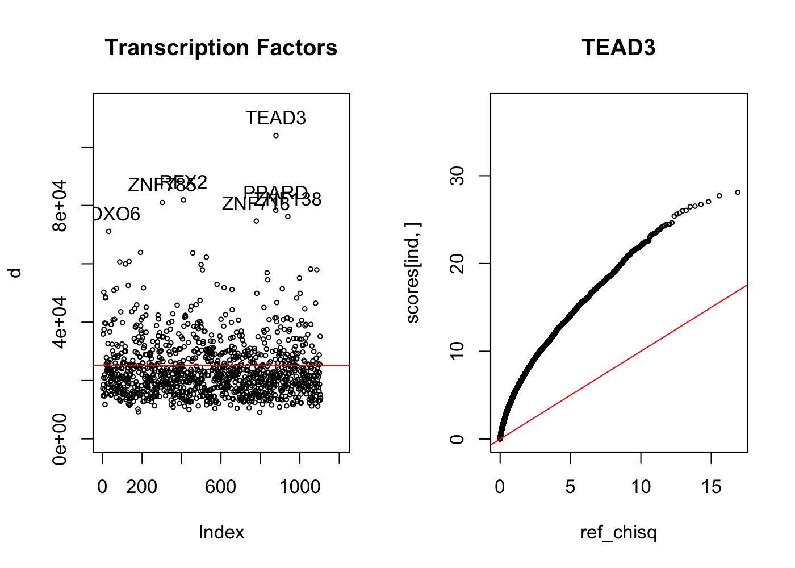
(b) TEAD3
(i) Score test
gene = "TEAD3"
results = ref[match(gene, ref$hgnc_symbol), ]
tead_ind = which(colnames(newY) %in% c(results$ensembl_gene_id))
newsmallY = newY[,-tead_ind]
s = news = rep(0, ncol(Y)-1)
for (i in 1:(ncol(Y)-1)){
s[i] = get_score_c(newX$A, newY[,tead_ind], newsmallY[,i])
}
plot(sort(s) ~ qchisq(seq(0,1,length=ncol(Y)-1), 1), type = 'l', main = 'TEAD3')
abline(0,1,col = 'red')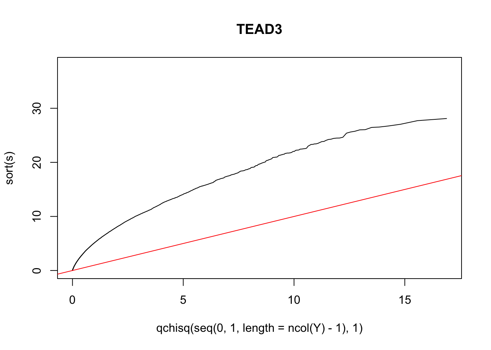
(ii) Permutation test
We conduct the permutation test to see if the signal is real.
tead_ind = which(colnames(newY) %in% TF_results[TF_results$hgnc_symbol=="TEAD3", 1])
W = store_W_c(newY[,tead_ind], newY[, -tead_ind])
tead_scores = get_score_W_c(newX$A, W)
tead_d = get_degree_c(newX$A, newY[,tead_ind], newY[,-tead_ind])
storeW = store_W_c(newY[,tead_ind], newY[,-tead_ind])
out = bootstrap_c(newX$A, B, storeW)
bootstrapped_d = rowSums(out)
tead_p = sum(bootstrapped_d > tead_d) / B
par(mfrow = c(1,1))
hist(bootstrapped_d, 50, xlim = c(10000, max(max(bootstrapped_d), tead_d))+100)
abline(v=tead_d, col = 'red')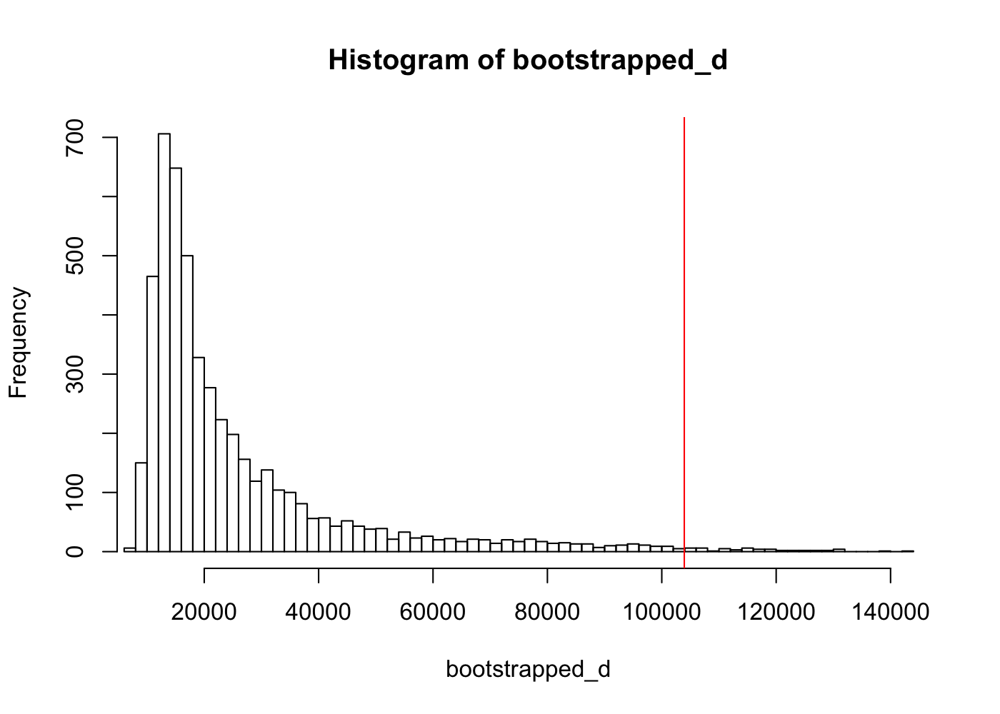
| Version | Author | Date |
|---|---|---|
| 432088c | tk382 | 2019-04-07 |
print(tead_p)[1] 0.0102(iii) Genes with the highest scores for TEAD3
We make some diagnosis plot to observe what is driving the signal.
max_scores = sort(s, decreasing=TRUE, index.return=TRUE)
results = ref[match(colnames(Y[,-tead_ind])[max_scores$ix[1:5]], ref$ensembl_gene_id), ]
results = results[match(results$ensembl_gene_id, colnames(Y[,-tead_ind])[max_scores$ix[1:5]]), ]
top_genes = data.frame(gene_name = results$hgnc_symbol, score = max_scores$x[1:5],
ensembl = results$ensembl_gene_id)
print(top_genes) gene_name score ensembl
1 LINC01412 37.89728 ENSG00000232606
2 LINC02031 28.10896 ENSG00000238837
3 GAPDHP49 27.71234 ENSG00000234285
4 STK32A-AS1 27.04721 ENSG00000250343
5 DNAJC12 26.73128 ENSG00000108176(iv) Top genes
par(mfrow = c(1,2))
max_scores = sort(s, decreasing=TRUE, index.return=TRUE)
plot(orig[-remove, tead_ind] + orig[-remove,-tead_ind][, max_scores$ix[1]] ~
orig_A[-remove],
xlab = 'Ancestry',
ylab = 'TEAD3 + STK32A-AS1')
plot(orig[-remove, tead_ind] + orig[-remove,-tead_ind][, max_scores$ix[2]] ~
orig_A[-remove],
xlab = 'Ancestry',
ylab = "TEAD3 + DNAJC12")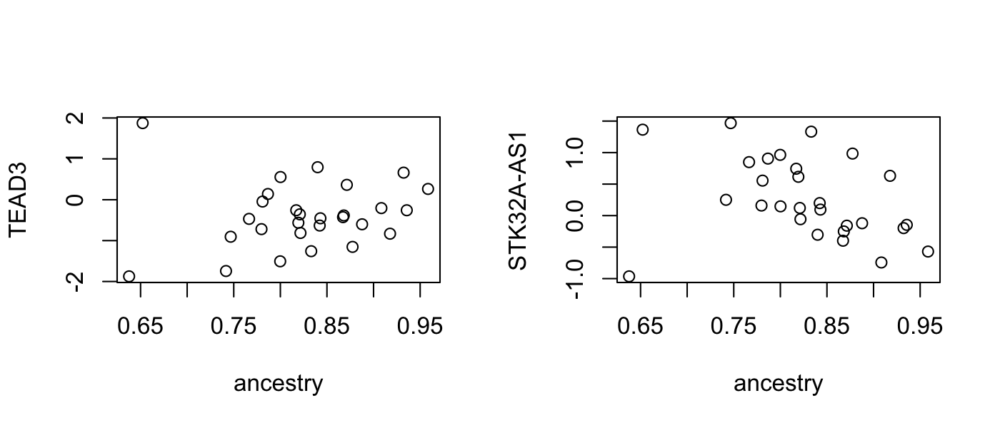
par(mfrow = c(1,2))
max_scores = sort(s, decreasing=TRUE, index.return=TRUE)
plot(orig[-remove, tead_ind] ~ orig_A[-remove], ylab = "TEAD3", xlab = "ancestry")
plot(orig[-remove, -tead_ind][, max_scores$ix[1]] ~ orig_A[-remove],
ylab = "STK32A-AS1", xlab = "ancestry")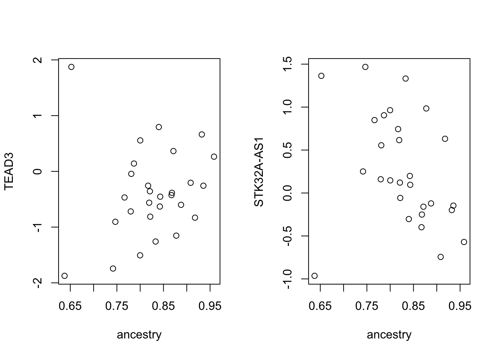
| Version | Author | Date |
|---|---|---|
| 432088c | tk382 | 2019-04-07 |
plot(orig[-remove, tead_ind] ~ orig_A[-remove], ylab = "TEAD3", xlab = "ancestry")
plot(orig[-remove, -tead_ind][, max_scores$ix[2]] ~ orig_A[-remove],
ylab = "DNAJC12", xlab = "ancestry")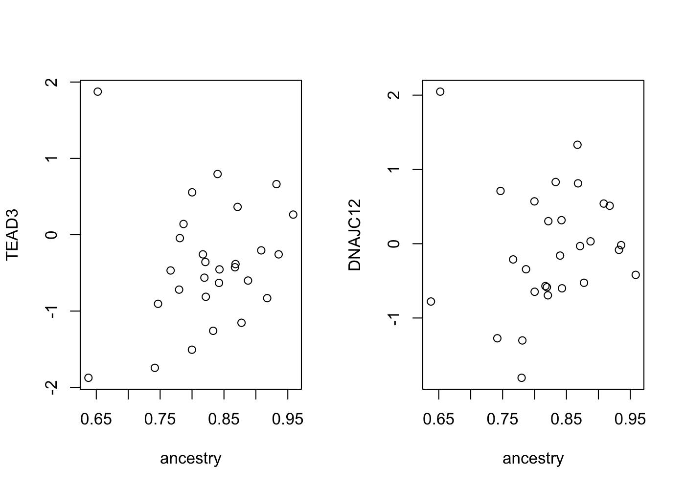
| Version | Author | Date |
|---|---|---|
| 432088c | tk382 | 2019-04-07 |
plot(orig[-remove, tead_ind] * orig[-remove, -tead_ind][, max_scores$ix[1]] ~ orig_A[-remove],
ylab = "TEAD3 * STK32A-AS1", xlab='ancestry')
plot(orig[-remove, tead_ind] * orig[-remove, -tead_ind][, max_scores$ix[2]] ~ orig_A[-remove],
ylab = "TEAD3 * DNAJC12", xlab='ancestry')
| Version | Author | Date |
|---|---|---|
| 432088c | tk382 | 2019-04-07 |
sessionInfo()R version 3.5.3 (2019-03-11)
Platform: x86_64-apple-darwin15.6.0 (64-bit)
Running under: macOS Sierra 10.12.6
Matrix products: default
BLAS: /Library/Frameworks/R.framework/Versions/3.5/Resources/lib/libRblas.0.dylib
LAPACK: /Library/Frameworks/R.framework/Versions/3.5/Resources/lib/libRlapack.dylib
locale:
[1] en_US.UTF-8/en_US.UTF-8/en_US.UTF-8/C/en_US.UTF-8/en_US.UTF-8
attached base packages:
[1] stats graphics grDevices utils datasets methods base
other attached packages:
[1] biomaRt_2.36.1 KEGGREST_1.22.0 ggplot2_3.1.0 nleqslv_3.3.2
[5] data.table_1.12.0 mvtnorm_1.0-10 MASS_7.3-51.3
loaded via a namespace (and not attached):
[1] Rcpp_1.0.1 prettyunits_1.0.2
[3] png_0.1-7 Biostrings_2.50.2
[5] assertthat_0.2.1 rprojroot_1.3-2
[7] digest_0.6.18 R6_2.4.0
[9] plyr_1.8.4 backports_1.1.3
[11] stats4_3.5.3 RSQLite_2.1.1
[13] evaluate_0.13 httr_1.4.0
[15] pillar_1.3.1 zlibbioc_1.26.0
[17] rlang_0.3.3 progress_1.2.0
[19] curl_3.3 lazyeval_0.2.2
[21] whisker_0.3-2 blob_1.1.1
[23] R.oo_1.22.0 S4Vectors_0.20.1
[25] R.utils_2.8.0 rmarkdown_1.12
[27] stringr_1.4.0 RCurl_1.95-4.12
[29] bit_1.1-14 munsell_0.5.0
[31] compiler_3.5.3 xfun_0.5
[33] pkgconfig_2.0.2 BiocGenerics_0.26.0
[35] htmltools_0.3.6 tidyselect_0.2.5
[37] tibble_2.1.1 workflowr_1.2.0
[39] IRanges_2.16.0 XML_3.98-1.19
[41] crayon_1.3.4 dplyr_0.8.0.1
[43] withr_2.1.2 bitops_1.0-6
[45] R.methodsS3_1.7.1 grid_3.5.3
[47] gtable_0.3.0 DBI_1.0.0
[49] git2r_0.25.2 magrittr_1.5
[51] scales_1.0.0 stringi_1.4.3
[53] XVector_0.20.0 RcppArmadillo_0.8.600.0.0
[55] fs_1.2.7 tools_3.5.3
[57] bit64_0.9-7 Biobase_2.40.0
[59] glue_1.3.1 purrr_0.3.2
[61] hms_0.4.2 parallel_3.5.3
[63] yaml_2.2.0 AnnotationDbi_1.42.1
[65] colorspace_1.4-1 memoise_1.1.0
[67] knitr_1.22